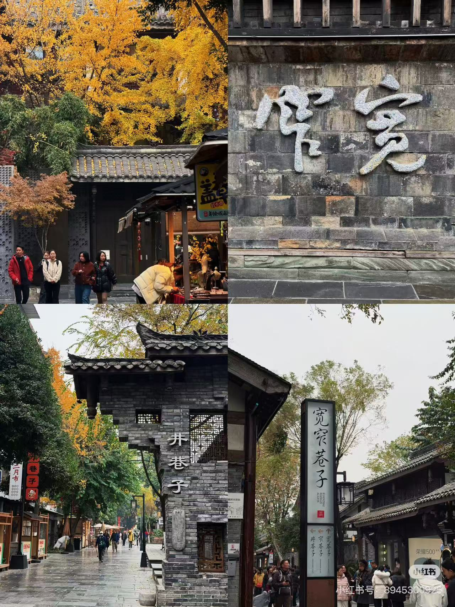
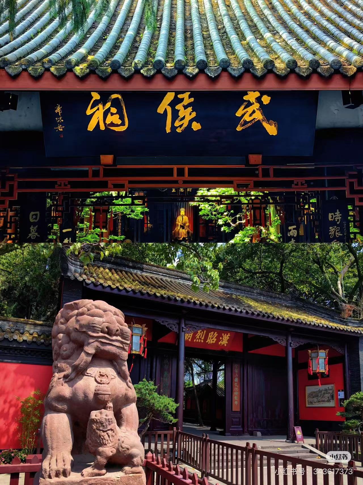
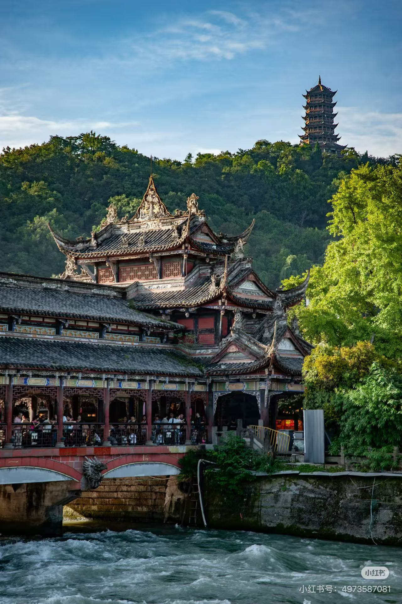

必游景点
探索天府之国，感受千年蓉城的独特魅力。

宽窄巷子
由宽巷子、窄巷子和井巷子组成，是成都遗留下来的清朝古街道。在这里可以体验老成都的慢生活，品尝地道小吃。
大熊猫基地
来成都必打卡的“顶流”地！这里不仅是研究大熊猫的科研机构，更是一个生态公园，可以近距离观赏憨态可掬的国宝。

武侯祠
中国唯一的一座君臣合祀祠庙，也是全国影响最大的三国遗迹博物馆。红墙竹影，是拍照打卡的绝佳胜地，感受三国文化。

都江堰
两千多年前由李冰父子主持修建的大型水利工程，至今仍在发挥作用。不仅景色秀丽，更是古人智慧的结晶，世界文化遗产。